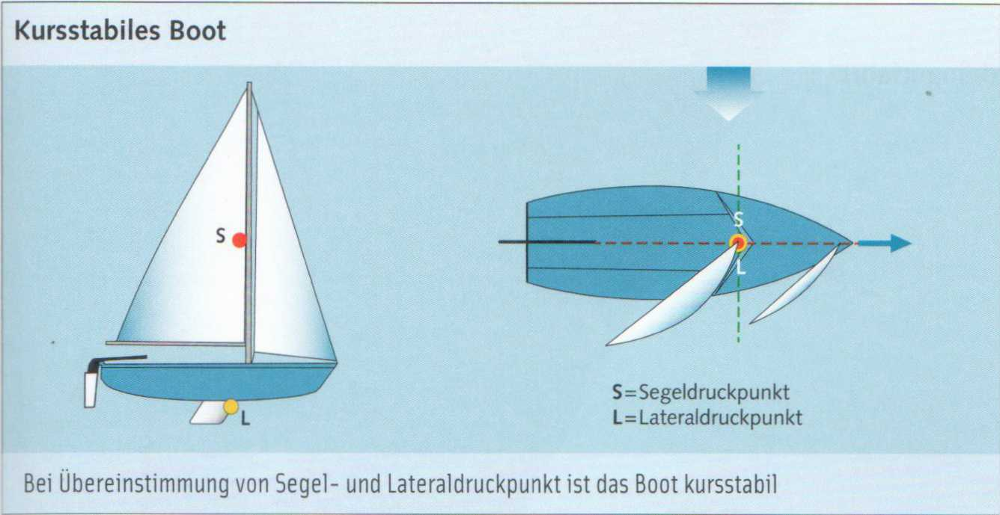
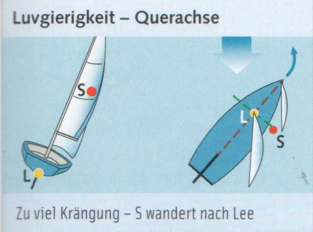
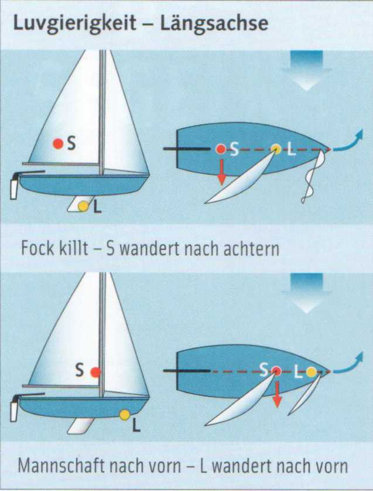
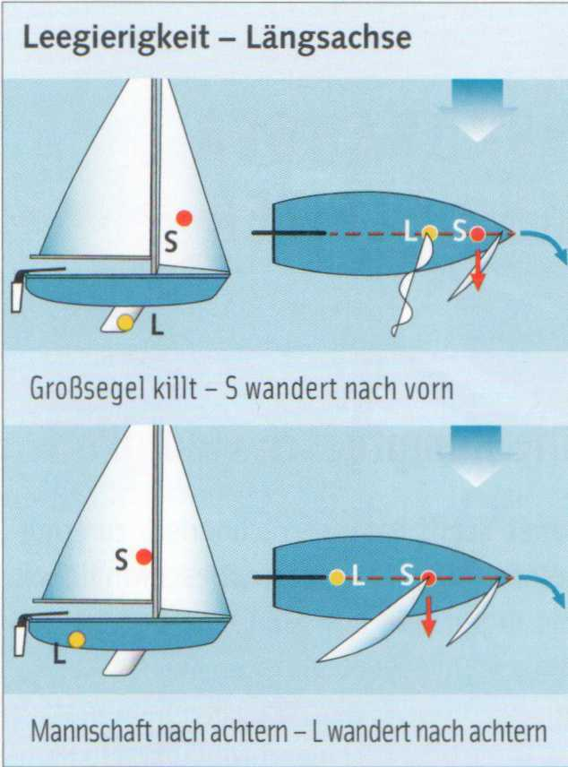

Под приводимостью (Luvgierigkeit) и увальчивостью (Leegierigkeit) понимают склонность некоторых лодок приводиться или уваливаться при руле, поставленном прямо по диаметральной плоскости. Откуда это берётся? Представим себе все силы ветра, действующие на всю площадь парусности, сосредоточенными в одной точке приложения — центре парусности (Segeldruckpunkt) S. А все силы, противодействующие боковому дрейфу, — в одной точке приложения на подводной части корпуса — центре бокового сопротивления (Lateraldruckpunkt) L. Тяга парусов (S) и сопротивление подводной части (L) образуют плечо на поперечной оси, создающее вращающий момент к ветру. Однако равновесие легко нарушается при сильном крене, когда центр парусности смещается под ветер, или при перемещении веса.

► Приводимость (Luvgierigkeit) возникает, когда центр парусности смещается к корме или центр бокового сопротивления — к носу.

► Увальчивость (Leegierigkeit) возникает, когда центр парусности смещается к носу или центр бокового сопротивления — к корме.
В любом случае приходится подруливать. Это не только утомительно, но и вызывает потерю скорости, поскольку постоянно слегка отклонённое перо руля тормозит. У хорошо сконструированной лодки эти противодействующие силы уравновешены так, что она идёт сбалансированно.


► Погон гика-шкота (Traveller) — под ветер
► Увеличить стаксель (Vorsegel)
► Сместить стаксель дальше к носу
► Взять рифы на гроте (Großsegel reffen)
► Поднять шверт (Schwert aufholen)
► Экипаж — к корме
► Погон — на ветер
► Уменьшить стаксель
► Сместить стаксель дальше к корме
► Опустить шверт (Schwert fieren)
► Экипаж — к носу